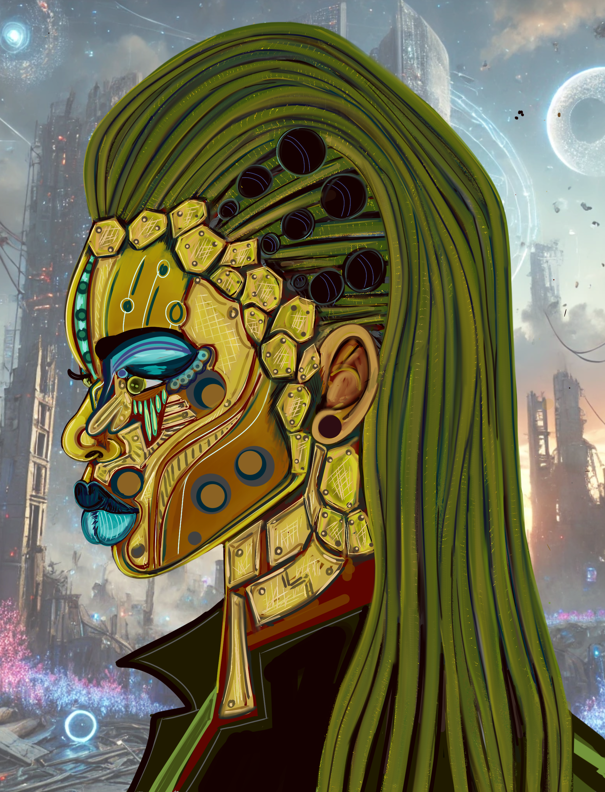
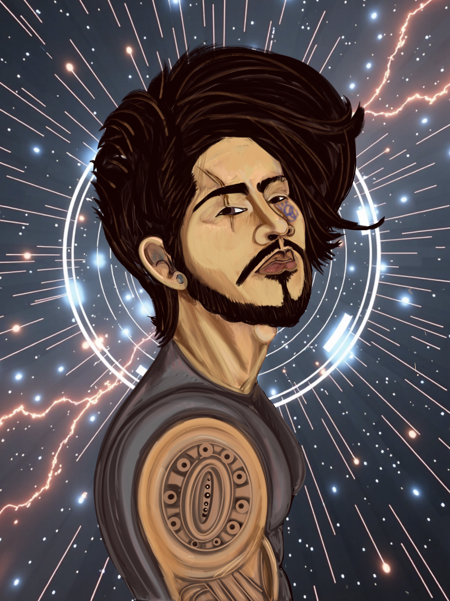
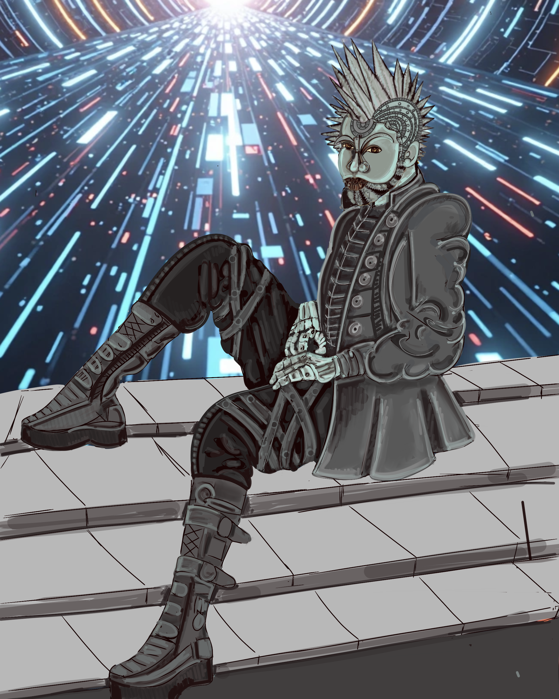
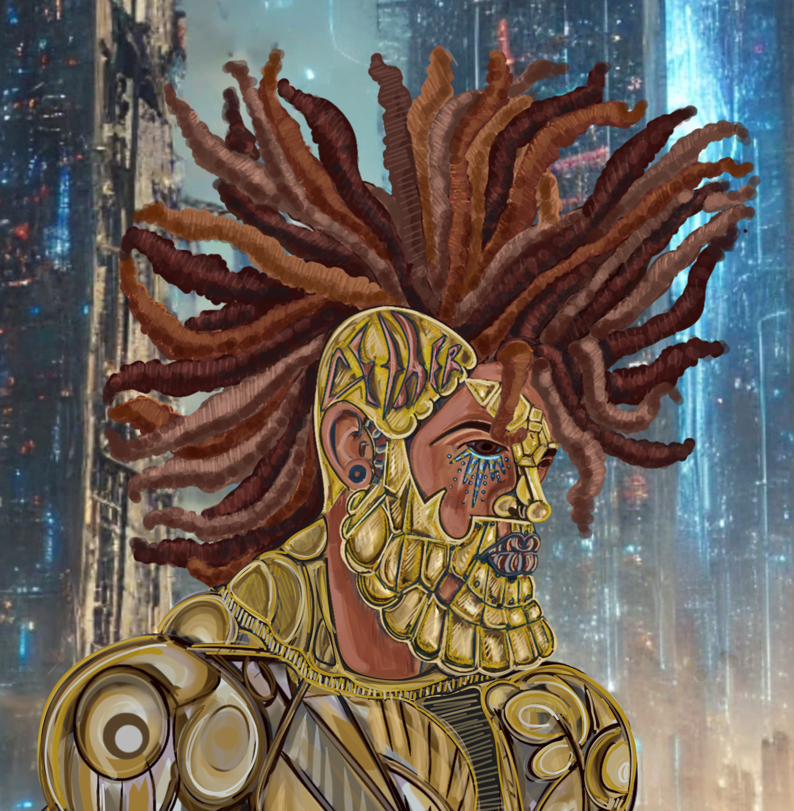

The Chronicles of Syth Nova // STATUS DETERMINATION
LETS LEVEL UP
SYTH NOVA CHRONICLES
SYSTEM STATUS
ONLINE
The Nova Codex
Which faction do your loyalties belong with?
Synth Nova
Synth Nova is known as the mother of the rebellion although she would beg to differ. She is a sentient being developed from a drive carrying a network of damning intel that was uploaded into a security protocol AI droid she became the protector of mankind. She is the leader of the Unity Nexus, and the hope of mankind

Kim Jae Hyuk
Jae Hyuk is the former prince of Elite society. Betrayed by his father he turned to the rebellion. As a Co Leader of the Unity Nexus he vows to bring down Elite society, and any AI faction not linked to the protection of mankind. Working alongside the love of his life Melody they vow to bring balance to all in equitable progress.

Aridyn
Aridyn is the leader of the Dissenters. He has no investement in the success of any faction. His motivating philosophy is Self Preservation. He controls a faction of neutral AI beings whose only purpose is survival. He and his crew will work with whomever has somthing that will benefit his family. From week to week they work with different interest. Loyalty is irrelevent.

Kryos
Kryos is the main Nemesis of the entire arc. He is the leader of the dominion Collective. His entire recourse is to destroy mankind and any remnants of their existence. He vows to win the war and eliminate all factions of human society, elite and oppressed. He has affection for Synth but abhors her love and protection of humans.

Enjoy the character cards, get acquainted with them! The answers are located within the character cards. Please study them before taking quiz!
Codex Tabulator
0
Select from the following: The Dominion Collective Elite Society The Unity Nexus
Select from the following: Betrayed by his father His mother passed away He wanted to be a bad boy
Select from the following: Support what right Self Preservation Evil never prevails
Select from the following: Humanity and their ways The Dissenters The Unity Nexus